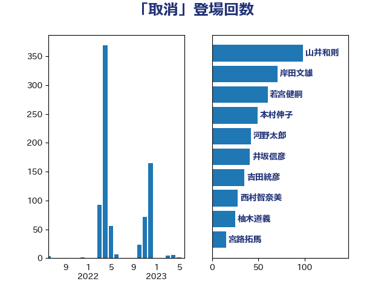

単語「取消」

| 山井和則 | 立憲民主党 | 98 回 |
| 岸田文雄 | 自由民主党 | 71 回 |
| 若宮健嗣 | 自由民主党 | 60 回 |
| 本村伸子 | 日本共産党 | 49 回 |
| 河野太郎 | 自由民主党 | 42 回 |
| 井坂信彦 | 立憲民主党 | 41 回 |
| 吉田統彦 | 立憲民主党 | 35 回 |
| 西村智奈美 | 立憲民主党 | 28 回 |
| 柚木道義 | 立憲民主党 | 25 回 |
| 宮路拓馬 | 自由民主党 | 15 回 |
| 掘井健智 | 日本維新の会 | 13 回 |
| 宮本徹 | 日本共産党 | 12 回 |
| 稲田朋美 | 自由民主党 | 11 回 |
| 田中健 | 国民民主党 | 11 回 |
| 吉田久美子 | 公明党 | 11 回 |
| 山田勝彦 | 立憲民主党 | 10 回 |
| 堤かなめ | 立憲民主党 | 10 回 |
| 長妻昭 | 立憲民主党 | 8 回 |
| 山下貴司 | 自由民主党 | 7 回 |
| 大西健介 | 立憲民主党 | 6 回 |
| 野田聖子 | 自由民主党 | 5 回 |
| 津島淳 | 自由民主党 | 5 回 |
| 柿沢未途 | 無所属 | 5 回 |
| 早稲田ゆき | 立憲民主党 | 5 回 |
| 古屋範子 | 公明党 | 5 回 |
| 伊佐進一 | 公明党 | 5 回 |
| 金子恭之 | 自由民主党 | 4 回 |
| 赤澤亮正 | 自由民主党 | 4 回 |
| 國重徹 | 公明党 | 4 回 |
| 鎌田さゆり | 立憲民主党 | 3 回 |
| 葉梨康弘 | 自由民主党 | 3 回 |
| 石橋通宏 | 立憲民主党 | 3 回 |
| 森山浩行 | 立憲民主党 | 3 回 |
| 川田龍平 | 立憲民主党 | 3 回 |
| 大石あきこ | れいわ新選組 | 3 回 |
| 井原巧 | 自由民主党 | 3 回 |
| 高橋千鶴子 | 日本共産党 | 2 回 |
| 馬場伸幸 | 日本維新の会 | 2 回 |
| 青山大人 | 立憲民主党 | 2 回 |
| 階猛 | 立憲民主党 | 2 回 |
| 鈴木英敬 | 自由民主党 | 2 回 |
| 石井浩郎 | 自由民主党 | 2 回 |
| 渡辺周 | 立憲民主党 | 2 回 |
| 浅川義治 | 日本維新の会 | 2 回 |
| 新垣邦男 | 立憲民主党 | 2 回 |
| 大口善徳 | 公明党 | 2 回 |
| 大串正樹 | 自由民主党 | 2 回 |
| 吉田はるみ | 立憲民主党 | 2 回 |
| 一谷勇一郎 | 日本維新の会 | 2 回 |
| 高見康裕 | 自由民主党 | 1 回 |
| 阿部弘樹 | 日本維新の会 | 1 回 |
| 金村龍那 | 日本維新の会 | 1 回 |
| 足立康史 | 日本維新の会 | 1 回 |
| 谷田川元 | 立憲民主党 | 1 回 |
| 藤田文武 | 日本維新の会 | 1 回 |
| 石井苗子 | 日本維新の会 | 1 回 |
| 漆間譲司 | 日本維新の会 | 1 回 |
| 徳永エリ | 立憲民主党 | 1 回 |
| 平沼正二郎 | 自由民主党 | 1 回 |
| 堀場幸子 | 日本維新の会 | 1 回 |
| 古川禎久 | 自由民主党 | 1 回 |
| 加藤勝信 | 自由民主党 | 1 回 |